День Смеха в Мамайской Республике
( 1 апреля 2007 )
Корки №2
Ночной заход... зачем? для чего? неужели нельзя зайти утром, как все нормальные
homo snowbordus? Кому это захотелось послушать шум ветра в верхушках елок и ощутить
крепчающий морозец? А может кому-то хотелось побороть древний страх перед Куганой?
Или кто-то вспомнил слова любимой песни "По белому снегу пушистому, под нашей волшебной луной"?
Или "Все невозможное - возможно.."? |
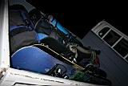 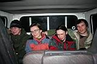 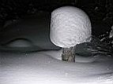
В любом случае, ночной заход - это штука незабываемая и пару раз за сезон должон быть!
На том и порешили.. Пятница, вечер, элепатехелле "Иркутск-Выдрино", 21:20 - выходим в
Байкальске и загружаемся в просторный грузовичек Сергея, который неравнодушен к активной
молодежи, потому как сам вечно молодой и весьма активный :) С перекусом в трактире добираемся
до места высадки в 23:00. Пошли партизанить без фонариков - луна как по заказу, а тропа не
пахана... Время 3:15, первый партизан Макс, на последнем горючем дошел до землянки и принялся
греть пиво. Второй партизан Лёха через 15 минут заслужил поощрительный приз - пару глотков
пивасика :) Бойцы невидимого фронта Вова и Антон, а также боевые подруги Катюша и Ксюша,
не давая друг другу батонить и спать на тропе с доблестью выполнили задачу-минимум -
дойти до лагеря без потерь. Осталась задача-максимум - истопить печь и сварить горячий ужин.
А то понимаешь ли, некоторые хотели на пиве успокоиться :) Все невозможное - возможно!
И вот через пару часов теплая и сытая компания забыла, кто вообще такие партизаны и какого
им надо в Мамайской Республике...
Утро, а точнее день выдался пасмурным и без осадков. Макс рассказывал про прошлые выходные,
как их чуть не засыпало лавинами. Да и свежие выносы комков снега со склонов лежали
и о чем-то говорили. И это неправда, что мамайские фрирайдеры - безбашенные отморозки.
На самом деле у них очень развито чувство самосохранения - при повышенной лавиноопасности
на них нападает лень, они катают вату, валяют дурака и пьют горькую или сладкую!
Только придурки ничего не боятся, а реальные пацаны всегда сидят на измене :) !
Из всего выше названного наиболее актуально было "повалять дурака", чем собственно и решили
заняться на трамплинах и небольшом склоне по соседству. Пара хороших фотоаппаратов очень
пригодились в качестве катализаторов процесса генерации дурацких идей -
чего не сделаешь ради суперовских фоток :)
|
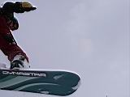 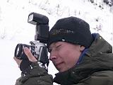 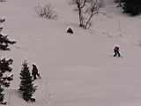 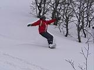 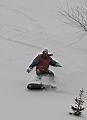
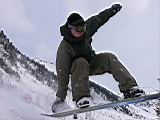 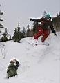 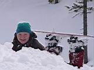 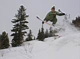 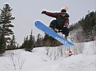
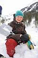 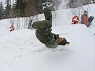 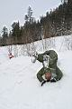 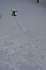
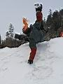 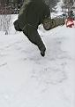 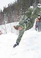 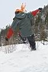 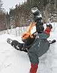 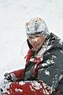 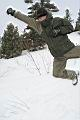
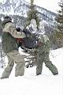 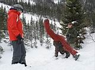 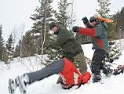 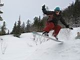
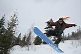 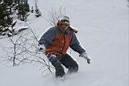 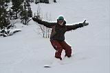
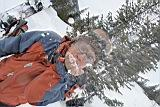 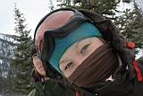 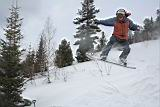 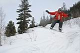
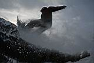 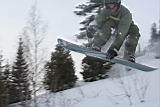 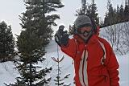 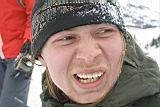
Под конец длинного весеннего дня два отморозка все-таки показали свое истинное лицо -
одели снеготапочки и полезли в гору, оставив товарищей загорать на кунге. Товарищи полностью
расслабились и уже закатали не одну партию ваты, как вдруг одна скромница предложила - "А
может немного того?" - "А у тебя есть?!!" - сразу же оживились бывалые гавайцы. Внезапное
обстоятельство передали радиограммой двум отморозкам, которые к этому времени уже
подзапарились тропить в гору и были бы рады любой причине, чтобы не лезть до Широкого
кулуара и раскатать хотя бы Второй. Раскатали. Снег вполне еще хороший и лежит прочно,
так что на теневых склонах еще зима! Вот на солнечных склонах - там весна, но все равно
кататься можно, если с крутяков не маньячить. Чем собственно девушки и занимались. Потом
они с отморозками долго ждали гавайцев, которые убежали за нужными вещами в зимуху.
Как бы не повторилась история Чебурашки из анекдота "Гена, на!" :) Однако скоро вопрос
решился как надо, и вся компания полным составом устроила дружескую, и все более веселую
посиделку под трамплином, ходе которой бывалые гавайцы поделились опытом и рассказали
много поучительных историй из жизни других гавайцев. |
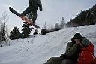 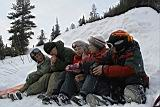 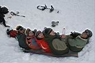 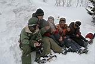
Посиделка продолжилась в зимухе, правда до нее еще надо было дойти или доехать,
а потом поискать полчаса дрова на большом камне, где летом построится летняя кухонька,
в которой будут отмечать дни рождения и прочие юбилеи. А еще надо медленно и верно сходить
на ручей за водой, при этом в ручей падать и искать там Кугану не надо, а падать можно только
в снег, на товарища или под елку. Тамадой вечерней посиделки был конечно же Антон.
Его наливательские таланты в сочетании с расказывательскими заставляли некоторых
присутствующих падать под лавку и давиться закуской от смеха. Гигабайты анекдотов и
историй в сочетании с процессором всяческих мыслей - вот уж кто за словом в карман не лезет :) !
Одна "Пельменная влага" чего стоит :) Да и прочее, и прочее, и прочее, и под коньячек, амриточку
и водочку сделали свое дело - День Смеха удался на все 100% ! |
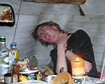 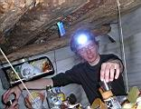 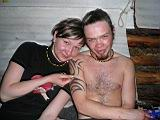 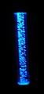
И не важно, что во всем мире это было только 31е марта.
В Мамайской Республике и не такое бывало :)
И хотя на завтрашний День Смеха и Валяния Дурака ничего горячительного
и веселительного не осталось, как показывает практика - это не проблема.
Читайте и смотрите продолжение - Корки №2 !!! |
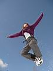
|